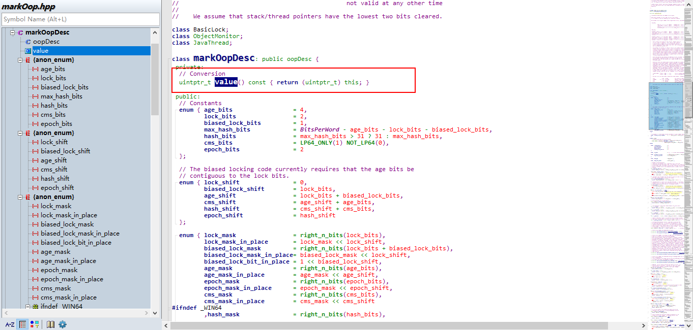

class对象头
数据结构
public class User {
private String name;
private Integer age;
private boolean sex;
public static void main(String[] args) {
User user = new User();
System.out.println(ClassLayout.parseInstance(user).toPrintable());
}
}
关闭指针压缩
klass.User object internals:
OFFSET SIZE TYPE DESCRIPTION VALUE
0 4 (object header) 01 00 00 00 (00000001 00000000 00000000 00000000) (1)
4 4 (object header) 00 00 00 00 (00000000 00000000 00000000 00000000) (0)
8 4 (object header) 28 30 9d 25 (00101000 00110000 10011101 00100101) (631058472)
12 4 (object header) 00 00 00 00 (00000000 00000000 00000000 00000000) (0)
16 1 boolean User.sex false
17 7 (alignment/padding gap)
24 8 java.lang.String User.name null
32 8 java.lang.Integer User.age null
Instance size: 40 bytes
Space losses: 7 bytes internal + 0 bytes external = 7 bytes total
打开指针压缩(默认)
klass.User object internals:
OFFSET SIZE TYPE DESCRIPTION VALUE
0 4 (object header) 01 00 00 00 (00000001 00000000 00000000 00000000) (1)
4 4 (object header) 00 00 00 00 (00000000 00000000 00000000 00000000) (0)
8 4 (object header) 05 c1 00 f8 (00000101 11000001 00000000 11111000) (-134168315)
12 1 boolean User.sex false
13 3 (alignment/padding gap)
16 4 java.lang.String User.name null
20 4 java.lang.Integer User.age null
Instance size: 24 bytes
Space losses: 3 bytes internal + 0 bytes external = 3 bytes total
打开指针压缩，并调用hashCode方法 如果不调用hashCode，对象头不会存储对象hash
hasCode为:7f31245a
klass.User object internals:
OFFSET SIZE TYPE DESCRIPTION VALUE
0 4 (object header) 01 5a 24 31 (00000001 01011010 00100100 00110001) (824465921)
4 4 (object header) 7f 00 00 00 (01111111 00000000 00000000 00000000) (127)
8 4 (object header) 05 c1 00 f8 (00000101 11000001 00000000 11111000) (-134168315)
12 1 boolean User.sex false
13 3 (alignment/padding gap)
16 4 java.lang.String User.name null
20 4 java.lang.Integer User.age null
Instance size: 24 bytes
Space losses: 3 bytes internal + 0 bytes external = 3 bytes total指针压缩后对象头所占内存为12字节
每创建一个新的对象，JVM就会相应地创建一个对应类型的oop对象，存储在堆中。对应于hotstpot中为instanceOopDesc,基类为oopDesc
普通对象对象头由一个markOop和一个联合体组成,markOop就是MarkWord,联合体是指向类的元数据指针 _compressed_klass
markOop和narrowKlass定义在oopsHierarchy.hpp中.
narrowKlass是一个junit, junit定义在globalDefinitions_visCPP.hpp头中，是一个无符号整型(4个字节)
markOop是markOopDesc类型指针

根据markOopDesc的源码显示markOopDesc并不会指向一个实例，直接把64位markWord数据存储在指针中
MarkWord组成
| 锁状态/gc | Mark Word(64 bits) | - | - | - |
|---|---|---|---|---|
| 无锁 | unused:25 | hashcode:31 | usunsed:1 | age:4 |
| 偏向锁 | thread:54 | epoch:2 | unused:1 | age:4 |
| 轻量级锁 | ptr_to_lock_record:62(指向栈中锁记录LockRecord的指针) | - | - | - |
| 重量级锁 | ptr_to_heavyweight_monitor:62(指向互斥量(重量级锁)的指针) | - | - | - |
| gc标志 | - | - | - | - |
MarkWord的状态判断
enum { locked_value = 0, //0 00 轻量级锁
unlocked_value = 1, //0 01 无锁
monitor_value = 2, //0 10 重量级锁
marked_value = 3, //0 11 gc标志
biased_lock_pattern = 5 //1 01 偏向锁
};
enum { lock_mask = right_n_bits(lock_bits), //锁标志 lock_bits为2 即 最后两位用来标识锁
lock_mask_in_place = lock_mask << lock_shift, //锁标志位置 lock_shift为0
biased_lock_mask = right_n_bits(lock_bits + biased_lock_bits), //偏向锁掩码 lock_bits为2 biased_lock_bits为1 所以为3 结果为111
biased_lock_mask_in_place= biased_lock_mask << lock_shift, //偏向锁位置 lock_shift为0
biased_lock_bit_in_place = 1 << biased_lock_shift,
age_mask = right_n_bits(age_bits),
age_mask_in_place = age_mask << age_shift,
epoch_mask = right_n_bits(epoch_bits),
epoch_mask_in_place = epoch_mask << epoch_shift,
cms_mask = right_n_bits(cms_bits),
cms_mask_in_place = cms_mask << cms_shift
#define nth_bit(n) (n >= BitsPerWord ? 0 : OneBit << (n)) //1左移1个字n位 如果超过1个字的位数，则返回0
#define right_n_bits(n) (nth_bit(n) - 1) //1左移n位后再减1 假获取右边n位1 比如right_n_bits(2) 则为 1<<2为100 再减1 则为 011
#define left_n_bits(n) (right_n_bits(n) << (n >= BitsPerWord ? 0 : (BitsPerWord - n)))通过以上了解，可以知道上图中的User的对象头信息MarkWord为0x00 00 00 7f 31 24 5a 01 (小端模式)，其中unused25位为00 00 00 再加7中最高位0。hash 25位为7f(111 1111) 31(0011 0001) 24(0010 0100) 5a(0101 1000) 最后8位(0-unused 0000-age 001-biaselock和lock)
锁升级流程
无锁 -> 偏向锁(jvm启动后4秒才会开启:防止系统sync同步线程竞争) -> 轻量级锁(自旋锁) -> 重量级锁
问题
- identity hashcode
如果没有重写默认的hashcode方法，默认的hashcode计算出的就是identity hashcode,这个值是被存储在对象头中的，如果重写之后，就不能叫identity hashcode了，计算出的值也不会存储在对象头中 - 为什么只有调用了hashcode方法才会初始化hash?
当一个对象已经计算过identity hash code，它就无法进入偏向锁状态；
当一个对象当前正处于偏向锁状态，并且需要计算其identity hash code的话，则它的偏向锁会被撤销，并且锁会膨胀为轻量级锁或者重量锁； - 为什么初始化hash后就不能用偏向锁了?
因为无论是轻量级锁和重量级锁，markWord都会用一个指针指向lockRecord或monitor,但是偏向锁没有，并且偏向锁还需要记录ThreadId
会覆盖掉hashcode。 所以偏向锁就无法找到原来的hashcode了.故初始化hash后就不能用偏向锁了 - synchronized锁的到底是什么?
如果锁的是实例，则用的是实例对象的对象头
如果锁的是类，则用的是Class对象的对象头(Class对象也存放在堆中)
版权声明：本博客所有文章除特殊声明外，均采用 CC BY-NC 4.0 许可协议。转载请注明出处 weijia的博客！